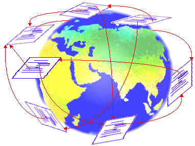
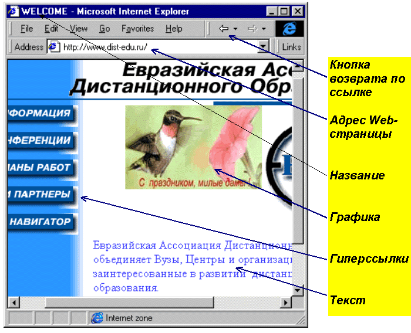
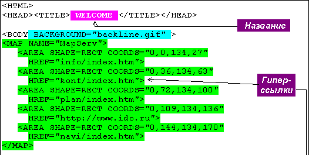
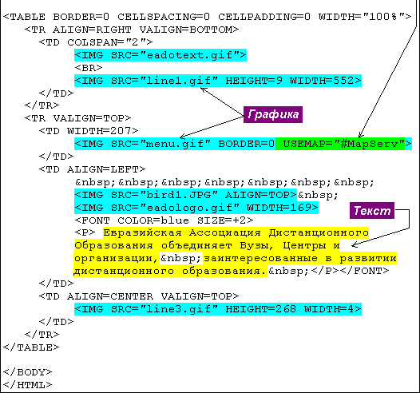
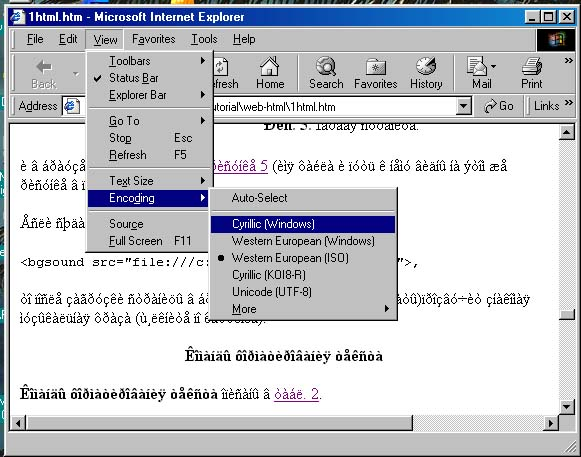

Технология гипертекста проникла в самые различные области интеллектуальной деятельности. Словари, справочники, энциклопедии, каталоги библиотек, торговых и промышленных предприятий, электронные учебники, системы хранения документации и поддержки творческой деятельности - лишь краткий перечень приложений технологии гипертекста. С появлением Всемирной Паутины в глобальной компьютерной сети Интернет гипертекст стал эффективным средством организации международных информационных ресурсов.
Гипертекст - это представленная в компьютере совокупность текстовых документов, часто называемых страницами, между которыми установлены гиперсвязи, соединяющие выделенные в тексте горячие слова или группы слов с теми страницами, где разъясняются соответствующие понятия. Благодаря гиперсвязям гипертекст можно читать так, как читают энциклопедические словари, т.е. следуя смысловым связям и с учётом потребностей читателя. Компьютер обеспечивает быструю и удобную навигацию, т.е. перемещение между страницами гипертекста. Самым распространённым примером гипертекста являются справочные файлы (help-файлы) программ, работающих под Windows. Для их использования необходима справочная система Windows, а для создания - специальное программное обеспечение.
|  |
| Рис. 1. Гипермедиа-документ. |
Гипермедиа обладает огромным потенциалом эмоционального и интеллектуального воздействия на человека. Самым ярким примером гипермедиа-документов являются Web-страницы, размещённые в Интернете, в его Всемирной паутине – World Wide Web. Просматриваются они с помощью программ, называемых Web-браузерами (от англ. browse – читать, просматривать). Наиболее широко используются браузеры Microsoft Internet Explorer (см. рис. 2) и Netscape Navigator.
|  |
|
Рис. 2. Web-страница в браузере Internet Explorer. |
Пользоваться этими программами и Web-документами можно не только в Интернете, но даже на машине, не подключённой ни к какой сети. Хотя для создания Web-страниц существует множество программ (даже Word'97 позволяет делать Web-страницы), полноценные Web-страницы можно без особого труда создавать в самых простых текстовых редакторах, таких как редактор Norton Commander'a в MS DOS или Notepad (Блокнот) в MS Windows.
Дело в том, что исходный текст любой Web-страницы - это простой, неформатированный текст на языке гипертекстовой разметки HTML (Hypertext Markup Language). Помимо основного текста, который вы хотите показать на странице, он содержит указания о том, как этот текст должен быть отформатирован, где и как должно быть вставлено графическое, звуковое и видео оформление (в виде ссылок на соответствующие файлы) и, самое принципиальное, где должны быть вставлены гиперссылки - указатели на другие Web-страницы или мультимедиа- документы, связанные с вашей страницей.Кроме того, в HTML-текст могут быть вставлены тексты программ на таких языках программирования, как Perl, Java, JavaScript и др. Эти вставки обеспечивают любую активность и интерактивность вашей Web-страницы, какую вы в состоянии запрограммировать.
Так как HTML является языком, на котором создаются Web-страницы, последние называют ещё и HTML-страницами или HTML-документами, чтобы подчеркнуть независимость этих документов от Web. Использование HTML в сетях будет рассмотрено позже, а сейчас изучим основные особенности этого языка.
Исходный текст на HTML можно создавать в любом текстовом редакторе, форматируя его лишь для удобства набора. Все используемые вами приёмы шрифты, отступы, разбиение на строки и абзацы) игнорируются Web-браузером и вид страницы зависит только от вставленных в текст HTML-команд.
| Закончив создание текста, нужно сохранить его как текстовый файл с расширением .htm |
Пример HTML-текста показан на рис. 3.
|  |
|  |
| Рис. 3. Исходный текст Web-страницы на языке HTML. |
Браузер покажет этот текст так, как Web-страницу на рис. 2.
Как уже говорилось, HTML-текст состоит из обычного текста страницы и HTML-команд. Текст можно набирать в любой кодировочной таблице, т.к. браузеры содержат несколько кодировочных таблиц и, при необходимости, могут быть переключены на нужную. Так, страница на рис. 3 содержит русский текст, набранный в кодировке Cyrillic Windows 1251, а на рис. 4 она показана в кодировке Western. Тут же показано, как переключить браузер на нужную кодировку.
|  |
| Рис. 4. Выбор кодировочной таблицы в Web-браузере. |
| Содержание | Вперед